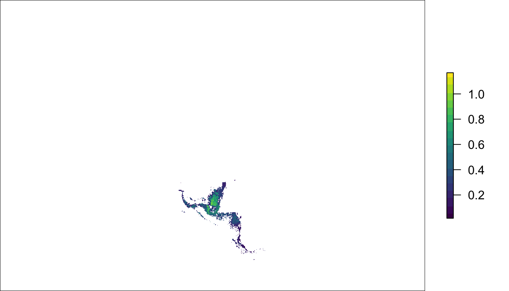
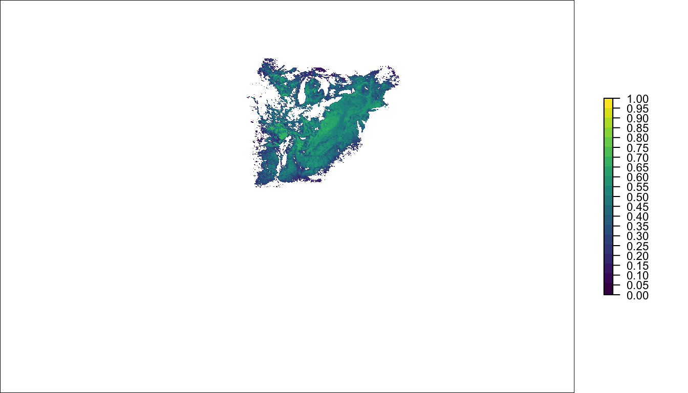
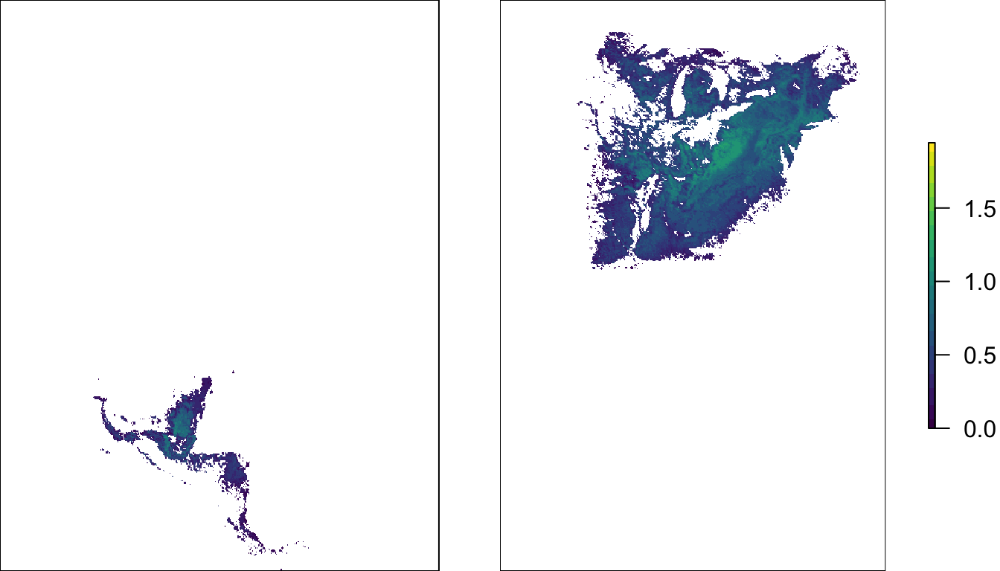
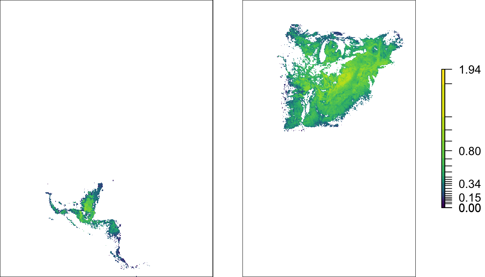
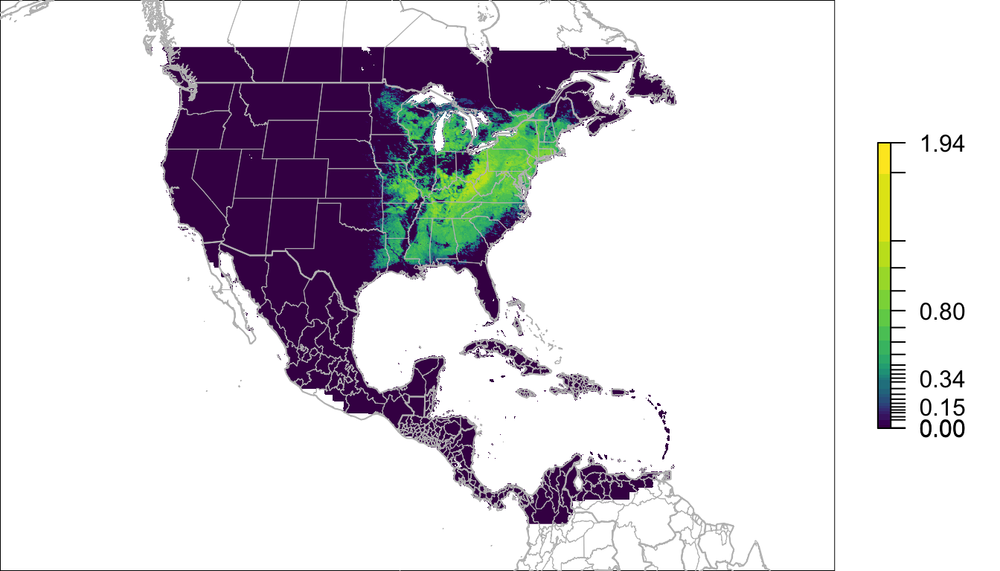
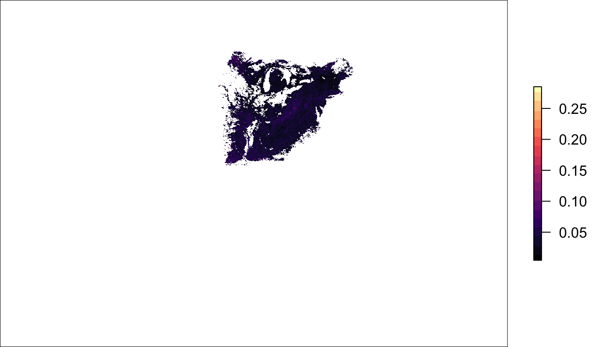
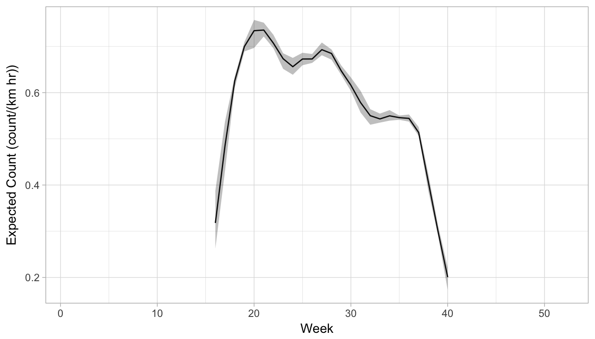
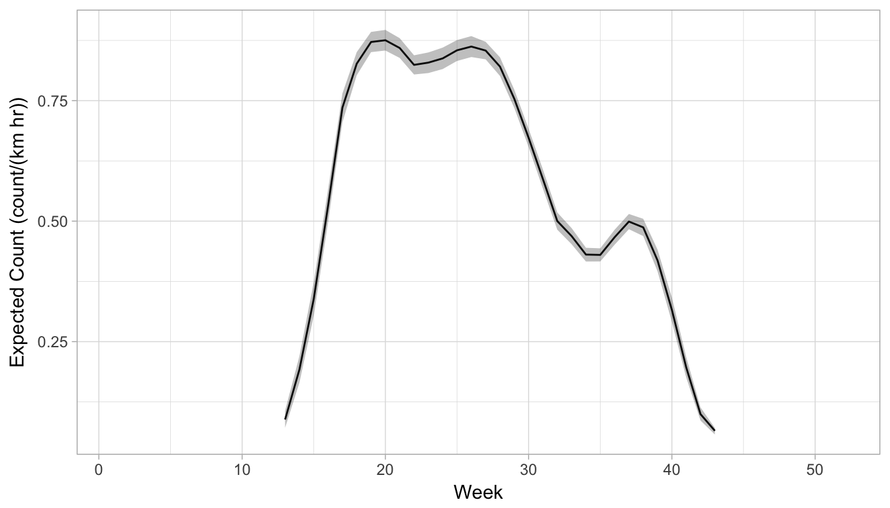

stemhelper: Introduction to loading and mapping eBird STEM results
Tom Auer, Daniel Fink
2017-10-31
Outline
- Background
- Projections and Loading Rasters
- Mapping Occurrence and Abundance
- Extracting Trajectories with Uncertainty
- Conversion
1. Background
Many ecological and conservation problems require comprehensive, high-resolution information about the spatial and temporal distribution and abundance of species’ populations. This poses a challenge because observations of species are often sparsely and irregularly distributed, especially for widely distributed species. To address this challenge, species distribution models are used to estimate species’ distributions in unobserved locations and times. By associating local environmental characteristics with observed patterns of species occurrence and abundance statistical models provide a framework to harness available data and make estimates in unobserved areas. Additionally, these models can be used to control for known sources of biases that arise from the observation process.
The relative abundance estimates described here were based on bird observation data from eBird, a citizen-science program administered by Cornell Lab of Ornithology, and local land cover descriptions derived from NASA MODIS and other remote sensing data. Individual species’ distributions and abundance were modeled using a spatio-temporal ensemble of boosted regression using the Spatio-Temporal Exploratory Model (STEM) framework (see Fink et al. 2010, 2014 and Johnston et al. 2015).
These models were then used to produce one daily abundance and occurrence estimate per week for all 52 weeks of the year. For each week, estimates were made across a regular grid of ~4 million locations that cover the terrestrial Western Hemisphere at a resolution of 2.8km x 2.8km. Variation in detectability associated with the search effort is controlled by standardizing the estimates to be the expected count of the species on a search conducted from 7-8AM while traveling 1 km on the given day at the given location by a typical eBirder.
Each relative abundance estimate was computed as an ensemble average of up to 100 randomized base models. Averaging across an ensemble of base model estimates, each trained on random subsample of the data, produces a smoothed bootstrap (Efron 2014) or a bagged estimator. For each abundance estimate we also computed upper and lower limits as the 10th and 90th percentiles across the ensemble. These limits are conservative estimates of the sampling variation of the smoothed bootstrap estimator, for the reasons discussed in Efron (2014), and because they are based on subsamples of the full data set.
Data access
To access STEM results, begin by creating an eBird account and signing in. The visit the Download Data page. STEM data access is free; however, you will need to request access in order to obtain access to the STEM data. Filling out the access request form allows eBird to keep track of the number of people using the data and obtain information on the applications for which the data are used.
Once you have access to the data, proceed to the download page. Here you will be able to download data for all species or for a list of 225 individual species. TBD…
Data Structure and Types
Estimates from STEM are currently provided in the widely used GeoTiff raster format. These are easily opened with the raster package in R, as well as with a variety of GIS software tools. STEM results are structured in the following way, with the prediction GeoTiff files for each week being found under the \<six_letter_code-ERD2016-PROD-date-uuid>\results\tifs\ directory.
\<six_letter_code-ERD2016-PROD-date-uuid>\
\<six_letter_code-ERD2016-PROD-date-uuid>\data
\<six_letter_code-ERD2016-PROD-date-uuid>\results
\<six_letter_code-ERD2016-PROD-date-uuid>\results\tifs
\<six_letter_code-ERD2016-PROD-date-uuid>\results\tifs\presentation
\<six_letter_code-ERD2016-PROD-date-uuid>\results\tifs\presentation\abundance_ensemble_support
\<six_letter_code-ERD2016-PROD-date-uuid>\results\tifs\presentation\abundance_lower
\<six_letter_code-ERD2016-PROD-date-uuid>\results\tifs\presentation\abundance_umean
\<six_letter_code-ERD2016-PROD-date-uuid>\results\tifs\presentation\abundance_upper
\<six_letter_code-ERD2016-PROD-date-uuid>\results\tifs\presentation\occurrence_umean
Raster Layer Descriptions
| Type | Measure | Folder | File Name |
|---|---|---|---|
| occurrence | mean | occurrence_umean | *_occurrence_umean.tif |
| abundance | mean | abundance_umean | *_abundance_umean.tif |
| abundance | 10th quantile | abundance_lower | *_abundance_lower.tif |
| abundance | 90th quantile | abundance_upper | *_abundance_upper.tif |
| ensemble | Ensemble Support | abundance_ensemble_support | *_abundance_ensemble_support.tif |
abundance_umean
This layer represents the mean estimated relative abundance of the species, defined as the expected number of birds encountered on a 1-hour, 1-kilometre eBird checklist starting at 7 AM.
abundance_lower
This layer represents the lower 10th quantile of the estimated relative abundance of the species, defined as the expected number of birds encountered on a 1-hour, 1-kilometre eBird checklist starting at 7 AM.
abundance_upper
This layer represents the upper 90th quantile of the estimated relative abundance of the species, defined as the expected number of birds encountered on a 1-hour, 1-kilometre eBird checklist starting at 7 AM.
abundance_ensemble_support
This layer defines the extent of estimation, or where there is sufficient input data to make predictions. It is defined as the areas that have as many independent models contributing to predictions at a single location while capturing at least 99.5% of positive observations (from all possible observations available). These areas are representing as a value of 1 in the raster layer (everything else is represented as an NA).
2. Projection and Loading Rasters
Projection
The GeoTiffs use the same Sinusoidal projection that the MODIS data uses. As part of this package, we provide a template raster, that contains the spatial extent, resolution, and land water definition (as a 0 value) for our modeled region. To access, call the template_raster object after loading the package.
template_raster## class : RasterLayer
## dimensions : 1907, 2267, 4323169 (nrow, ncol, ncell)
## resolution : 8339.629, 8339.629 (x, y)
## extent : -20015109, -1109171, -6674483, 9229189 (xmin, xmax, ymin, ymax)
## coord. ref. : +proj=sinu +lon_0=0 +x_0=0 +y_0=0 +a=6371007.181 +b=6371007.181 +units=m +no_defs
## data source : in memory
## names : srd2016_wh_raster_template_3xagg
## values : 0, 0 (min, max)Loading Rasters
Once you have accessed and downloaded a set of STEM results, the first task is to load them into R in a way that they can be used easily. To save space on disk, each individual raster (e.g., abundance mean for Wood Thrush for January 4) has had NA values trimmed before saving (using the raster package trim() function). While this saves space on disk, it means that the rasters are not immediately comparable and trying to use the raster stack() function will fail. To assist with the loading of rasters, we have provided a helper function, stack_stem(), which uses the template_raster object to extend each input raster in a directory to the full extent of analysis and then returns a RasterStack object.
# TODO set this up to do a curl of the example results first
# Note, if you currently access results you can use this path construction
# by replacing the root_path with where your copy lives
root_path <- "~/Box Sync/Projects/2015_stem_hwf/documentation/data-raw/"
species <- "woothr-ERD2016-PROD-20170505-3f880822"
sp_path <- paste(root_path, species, sep = "")
# load a stack of rasters with the helper function stack_stem()
abund_stack <- stack_stem(sp_path, variable = "abundance_umean")
print(abund_stack)## class : RasterStack
## dimensions : 1907, 2267, 4323169, 52 (nrow, ncol, ncell, nlayers)
## resolution : 8339.629, 8339.629 (x, y)
## extent : -20015109, -1109171, -6674483, 9229189 (xmin, xmax, ymin, ymax)
## coord. ref. : +proj=sinu +lon_0=0 +x_0=0 +y_0=0 +a=6371007.181 +b=6371007.181 +units=m +no_defs
## names : woothr.ER//ance_umean, woothr.ER//ance_umean, woothr.ER//ance_umean, woothr.ER//ance_umean, woothr.ER//ance_umean, woothr.ER//ance_umean, woothr.ER//ance_umean, woothr.ER//ance_umean, woothr.ER//ance_umean, woothr.ER//ance_umean, woothr.ER//ance_umean, woothr.ER//ance_umean, woothr.ER//ance_umean, woothr.ER//ance_umean, woothr.ER//ance_umean, ...
## min values : 0.015118375, 0.015788087, 0.033285676, 0.052928034, 0.024066419, 0.029316657, 0.032420257, 0.022123046, 0.005116472, 0.007878265, 0.008822452, 0.006654291, 0.012099929, 0.013628872, 0.015761521, ...
## max values : 1.3302507, 1.6452209, 1.9444350, 1.8349457, 1.4688664, 1.2054517, 1.0085490, 1.0894841, 1.0850736, 1.0477763, 0.9113657, 0.7379155, 0.5582393, 0.5659341, 0.7697676, ...In most use cases, this function will be used to stack the 52 weeks of a single variable (e.g., abundance mean) for a single species. However, if the STEM .tif rasters were re-arranged, the function could be used to, for example, stack single weeks for a single variable across multiple species.
3. Mapping Occurrence and Abundance
One of the most common activities with STEM results is to make plots of occurrence and abundance. It is fast and easy to make plots immediately, but to get ideal plotting behavior takes a little bit of preparation. This sections describes some helper functions intended to assist with mapping.
Projections and Calculating Full-annual Spatial Extent
The sinusoidal projection that NASA provides MODIS data in, while functional because of its equal-area property, is not good for mapping because of the significant distortion of land masses across the globe. There are few global equal-area projections, including, but not limited to, Lambert Azimuthal Equal Area, Goode Homolosine, Mollweide, and Equal Area Cylindrical. Of these, we have selected Mollweide, used in the remainder of this section, for its pleasing conformal properties across the globe, ease of projection configuration within R and the proj4string construction, and the ease of setting central meridians that best display the Western Hemisphere. It is worth noting that while projecting to a more visually appealing projection is ideal for mapping, it is not necessary for quantitative analysis of STEM results, for which purposes the results can be left in the sinusoidal projection.
library(viridis)
# define mollweide projection
mollweide <- sp::CRS("+proj=moll +lon_0=-90 +x_0=0 +y_0=0 +ellps=WGS84")
# project single layer from stack to mollweide
week1_moll <- raster::projectRaster(abund_stack[[1]], crs = mollweide)
# optionally, you can project an entire stack, but it takes much longer
#abund_stack_moll <- raster::projectRaster(abund_stack, crs = mollweide)
# plot single layer with full annual extent
par(mar = c(0,0,0,2))
raster::plot(week1_moll,
xaxt = 'n',
yaxt = 'n',
bty = 'n',
col = viridis(20),
maxpixels = raster::ncell(week1_moll))
Plotting the layer at the full spatial extent of the analysis area makes for a small map. The process of building the stack unifies the extent of all layers in the stack. However, this also means that plotting happens at the full spatial extent of the area of analysis, the Western Hemisphere, as seen above. If we calculate the full annual spatial extent for the species, project to Mollwide, and then map, we get an extent that works for the entire full-annual cycle of the species.
# calculate the full annual extent on the abundance stack (in mollweide projection)
abund_moll <- raster::projectRaster(abund_stack, crs = mollweide)
sp_ext <- calc_full_extent(abund_moll)
# plot the first week of the abundance stack in Mollweide
par(mar = c(0,0,0,2))
raster::plot(week1_moll,
xaxt = 'n',
yaxt = 'n',
bty = 'n',
ext = sp_ext,
col = viridis(20),
maxpixels=raster::ncell(week1_moll))
Mapping Occurrence
Most examples in this vignette focus primarily on abundance predictions, as they’re the most novel and informative. However, we also provide the probability of occurrence predictions. These are much simpler to plot than abundance, as values range between 0 and 1 throughout the year.
# load a stack of occurrence
occ_stack <- stack_stem(sp_path, variable = "occurrence_umean")
# create breaks every 0.05 from 0 to 1
occ_bins <- seq(0, 1, by = 0.05)
occ_week26 <- raster::projectRaster(occ_stack[[26]], crs = mollweide)
par(mar = c(0,0,0,2), cex = 0.7)
raster::plot(occ_week26,
xaxt = 'n',
yaxt = 'n',
bty = 'n',
ext = sp_ext,
breaks = occ_bins,
col = viridis(length(occ_bins) - 1),
maxpixels = raster::ncell(occ_week26))
Calculating Abundance Bins
Mapping species abundance across the full-annual cycle presents a challenge, in that patterns of concentration and dispersion in abundance change throughout the year, making it difficult to define color bins that suit all seasons and accurately reflect the detail of abundance predictions. To address this, we selected a method (described by Maciejewski et al. 2013) that log transforms the entire year of data, constructs bins with the log-transformed data using standard deviations, and then un-transforms the bins for plotting.
To compare, we first scale the colors linearly, based on the maximum from the entire year.
year_max <- max(raster::maxValue(abund_stack), na.rm = TRUE)
week26_moll <- raster::projectRaster(abund_stack[[26]], crs = mollweide)
par(mfrow = c(1,2), mar = c(0,0,0,0))
raster::plot(week1_moll,
xaxt = 'n',
yaxt = 'n',
bty = 'n',
ext = sp_ext,
zlim = c(0, year_max),
col = viridis(20),
maxpixels = raster::ncell(week1_moll),
legend=FALSE)
par(mar = c(0,0,0,4))
raster::plot(week26_moll,
xaxt = 'n',
yaxt = 'n',
bty = 'n',
ext = sp_ext,
zlim = c(0, year_max),
col = viridis(20),
maxpixels = raster::ncell(week26_moll))
We can compare this with plots made using the binning method provided here.
# calculate ideal color bins for abundance values
year_bins <- calc_bins(abund_stack)
# create a thinner set of labels
bin_labels <- format(round(year_bins, 2), nsmall = 2)
bin_labels[!(bin_labels %in% c(bin_labels[1],
bin_labels[round((length(bin_labels) / 4)) + 1],
bin_labels[round((length(bin_labels) / 2)) + 1],
bin_labels[length(bin_labels) -
round((length(bin_labels) / 4)) + 1],
bin_labels[length(bin_labels)]))] <- ""
par(mfrow = c(1,2), mar = c(0,0,0,0))
raster::plot(week1_moll,
xaxt = 'n',
yaxt = 'n',
bty = 'n',
ext = sp_ext,
breaks = year_bins,
lab.breaks = bin_labels,
col = viridis(length(year_bins) - 1),
maxpixels = raster::ncell(week1_moll),
legend = FALSE)
par(mar = c(0,0,0,5))
raster::plot(week26_moll,
xaxt = 'n',
yaxt = 'n',
bty = 'n',
ext = sp_ext,
breaks = year_bins,
lab.breaks = bin_labels,
col = viridis(length(year_bins) - 1),
maxpixels=raster::ncell(week26_moll))
Mapping Abundance
With a good full-annual extent and color bins, that accurately represent the data distribution, we can add in other pieces of data that represent predicted and assumed zeroes, which help display the extent of estimation.
# the helper function combine_layers() fills in with assumed and predicted zeroes
week26 <- combine_layers(abund_stack, sp_path, week = 26)
week26c <- raster::projectRaster(week26, crs = mollweide)
# to add context, let's pull in some reference data to add
wh <- rnaturalearth::ne_countries(continent = c("North America",
"South America"))
wh_states <- rnaturalearth::ne_states(iso_a2 = unique(wh@data$iso_a2))
wh_moll <- sp::spTransform(wh, mollweide)
wh_states_moll <- sp::spTransform(wh_states, mollweide)
xlimits <- c(sp_ext[1], sp_ext[2])
ylimits <- c(sp_ext[3], sp_ext[4])
xrange <- xlimits[2] - xlimits[1]
yrange <- ylimits[2] - ylimits[1]
# these are RMarkdown specific here, but could be passed to png()
w_img <- 7
h_img <- w_img*(yrange/xrange)
knitr::opts_chunk$set(fig.width = w_img, fig.height = h_img)
par(mar = c(0,0,0,2))
raster::plot(week26c,
xaxt = 'n',
yaxt = 'n',
bty = 'n',
ext = sp_ext,
breaks = year_bins,
lab.breaks = bin_labels,
col = viridis(length(year_bins)-1),
maxpixels = raster::ncell(week26c),
legend = TRUE)
sp::plot(wh_moll, add = TRUE, border = 'gray')
sp::plot(wh_states_moll, add = TRUE, border = 'gray', lwd = 0.5)
Mapping Abundance Confidence Intervals
In addition to occurrence and abundance predictions, we also provide confidence intervals at an upper value of 90% and lower value of 10%. These can be used to calculate and map a confidence band width.
# load lower and upper stacks
lower_stack <- stack_stem(sp_path, variable = "abundance_lower")
upper_stack <- stack_stem(sp_path, variable = "abundance_upper")
# calculate band width
conf_band <- upper_stack - lower_stack
conf_week26 <- raster::projectRaster(conf_band[[26]], crs = mollweide)
par(mar = c(0,0,0,2))
raster::plot(conf_week26,
xaxt = 'n',
yaxt = 'n',
bty = 'n',
ext = sp_ext,
col = magma(20),
maxpixel=raster::ncell(conf_week26))
4. Extracting Trajectories with Uncertainty
With raster stacks for abundance, upper, and lower confidence intervals, we can extract an abundnace trajectory, with uncertainty intervals and plot them across the year for a single location.
# set a point
coords <- cbind(-76.5, 42.5)
pt <- sp::SpatialPoints(coords, proj4string = sp::CRS("+init=epsg:4326"))
pt_prj <- sp::spTransform(pt, sp::CRS(sp::proj4string(template_raster)))
# extract
abund_traj <- unlist(raster::extract(abund_stack,
pt_prj,
fun = mean,
na.rm = TRUE))
upper_traj <- unlist(raster::extract(upper_stack,
pt_prj,
fun = mean,
na.rm = TRUE))
lower_traj <- unlist(raster::extract(lower_stack,
pt_prj,
fun = mean,
na.rm = TRUE))
# Plot trajectories
library(ggplot2)
plot_frame <- data.frame(x = 1:length(abund_traj),
y = c(unname(abund_traj)),
upper = c(unname(upper_traj)),
lower = c(unname(lower_traj)))
g <- ggplot(plot_frame, aes(x, y)) +
geom_line(data = plot_frame) +
geom_ribbon(data = plot_frame,
aes(ymin = lower, ymax = upper),
alpha = 0.3) +
ylab("Expected Count (count/(km hr))") +
xlab("Week") +
theme_light()
g
It is also possible to extract trajectories for regions, but it takes a little more data work.
# set an extent based on polygon
us <- rnaturalearth::ne_states(geounit = "United States of America")
us_prj <- sp::spTransform(us, sp::CRS(sp::proj4string(template_raster)))
wv <- us_prj[us_prj@data$name == "West Virginia",]
# extract
# because we're using regions, we get lots of values that we need to average together
abund_traj <- raster::extract(abund_stack, wv, fun = mean, na.rm = TRUE)
abund_traj <- apply(abund_traj, 2, mean, na.rm = TRUE)
upper_traj <- raster::extract(upper_stack, wv, fun = mean, na.rm = TRUE)
upper_traj <- apply(upper_traj, 2, mean, na.rm = TRUE)
lower_traj <- raster::extract(lower_stack, wv, fun = mean, na.rm = TRUE)
lower_traj <- apply(lower_traj, 2, mean, na.rm = TRUE)
# Plot trajectories
library(ggplot2)
plot_frame <- data.frame(x = 1:length(abund_traj),
y = c(unname(abund_traj)),
upper = c(unname(upper_traj)),
lower = c(unname(lower_traj)))
g <- ggplot(plot_frame, aes(x, y)) +
geom_line(data = plot_frame) +
geom_ribbon(data = plot_frame,
aes(ymin = lower, ymax =upper),
alpha = 0.3) +
ylab("Expected Count (count/(km hr))") +
xlab("Week") +
theme_light()
g
5. Conversion
The raster package has a lot of functionality and the RasterLayer format is useful for spatial analysis and mapping, but some users do not have GIS experience or want the data in a simpler format for their preferred method of analysis. There are multiple ways to get more basic representations of the data.
# To convert the data to a simpler geographic format and access tabularly
# reproject into geographic (decimal degrees)
abund_stack_ll <- raster::projectRaster(abund_stack[[26]],
crs = sp::CRS("+init=epsg:4326"))
# Convert raster object into a matrix
p <- raster::rasterToPoints(abund_stack_ll)
colnames(p) <- c("longitude", "latitude", "abundance_umean")
head(p)## longitude latitude abundance_umean
## [1,] -94.91638 48.7625 0.2094019
## [2,] -94.83988 48.7625 0.1718842
## [3,] -94.53388 48.7625 0.1721756
## [4,] -94.45738 48.7625 0.2931008
## [5,] -94.38088 48.7625 0.5760729
## [6,] -94.30438 48.7625 0.3509973# Write a CSV file of the matrix
write.csv(p,
file = paste(raster_dir, "/woothr_week26.csv", sep=""),
row.names = FALSE)